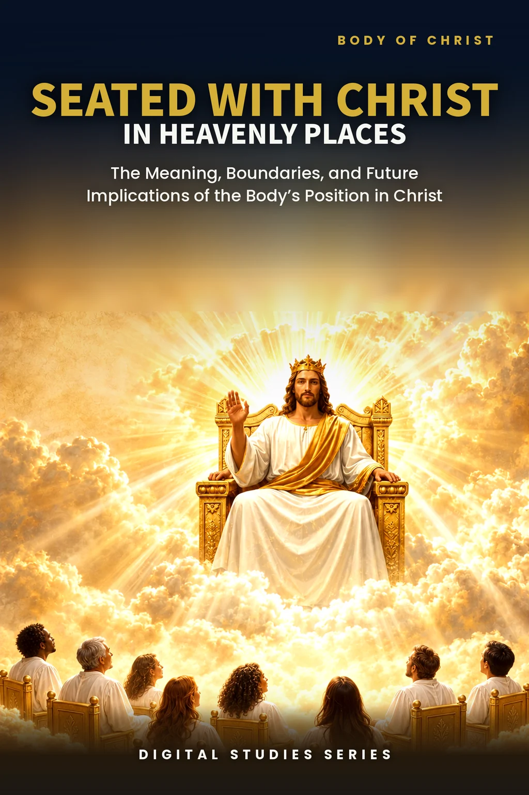
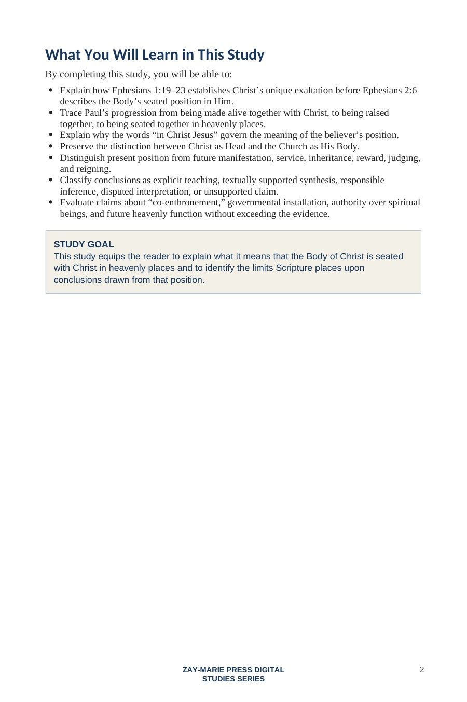
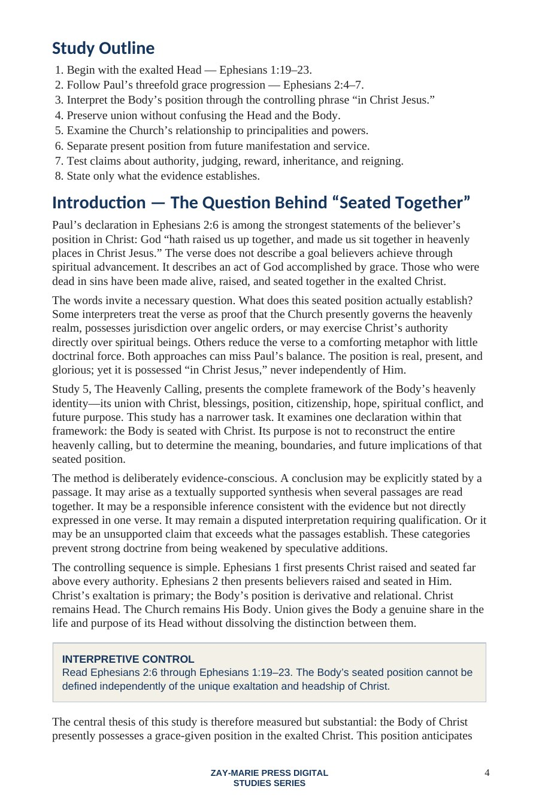
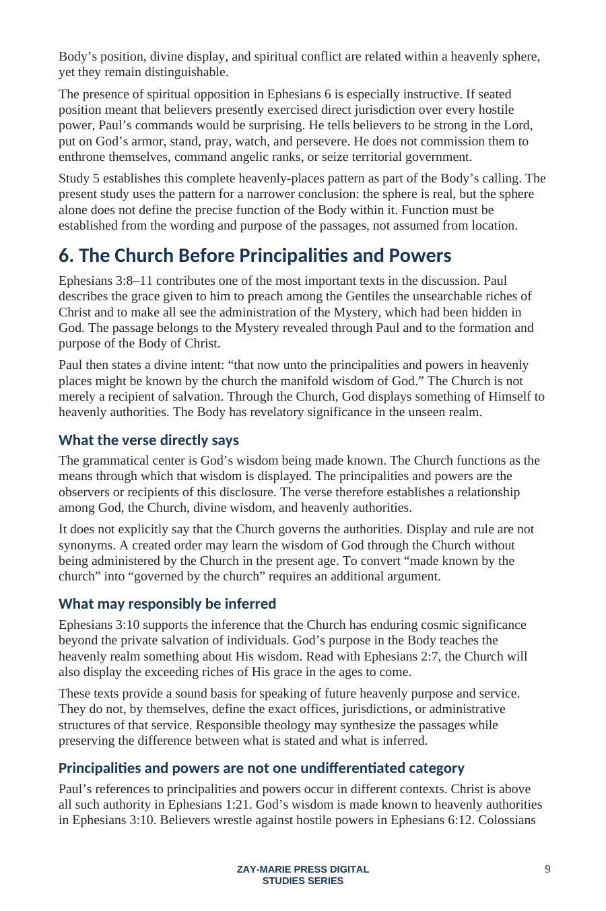
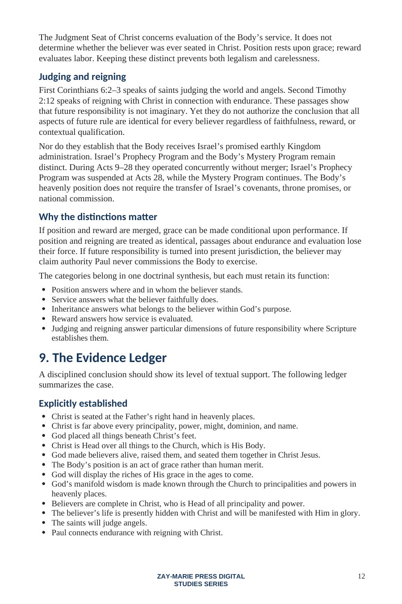

Seated With Christ in Heavenly Places
The Meaning, Boundaries, and Future Implications of the Body’s Position in Christ
A focused examination of Ephesians 1:19–23 and 2:4–7
Paul declares that God has made believers alive, raised them, and seated them together in heavenly places in Christ Jesus. This study explains the force of that position without weakening it or expanding it beyond the evidence.
Follow the distinction between Christ as Head and the Church as His Body, present position and future manifestation, and explicit teaching and responsible inference.
What Does the Body’s Seated Position Establish?
Ephesians first presents Christ raised and seated far above every principality, power, might, dominion, and name. It then presents believers as made alive, raised, and seated together in Him. Christ’s exaltation is primary; the Body’s position is derivative, relational, and wholly grounded in grace.
This study tests claims about co-enthronement, governmental installation, authority over spiritual beings, judging, reward, inheritance, and reigning. It affirms what Scripture states, labels responsible inference honestly, and rejects conclusions the passages do not establish.
How These Studies Relate
Study 30 closely tests what being seated with Christ means in Ephesians 1–2, including the limits of claims about authority and service.
Study 5 — The Heavenly Calling Set this focused passage study within the Body’s wider heavenly calling, citizenship, hope, and purpose; the larger framework gives context without supplying details Ephesians 2:6 does not state.
Study 16 — The Believer's Identity in Christ Relate the seated position to the believer’s broader standing and conduct in Christ, so positional truth and daily life are kept together without confusing them.
Move From Christ’s Exaltation to the Body’s Position
Christ Above Every Authority
Begin with the exalted Head before interpreting the Body’s seated position.
Made Alive, Raised, and Seated
Follow Paul’s threefold grace progression in Ephesians 2:4–7.
In Christ Jesus
Let union with Christ govern the meaning and boundaries of the doctrine.
Head and Body
Preserve genuine union without confusing identity, rank, or headship.
Principalities and Powers
Distinguish divine display through the Church from present jurisdiction over spiritual beings.
Position and Future Function
Separate present standing from manifestation, service, inheritance, reward, judging, and reigning.
Build the Doctrine From the Text
Ephesians 1:19–23
Christ raised, seated, and placed far above every authority as Head over all things to the Church.
Ephesians 2:4–7
The Body made alive, raised, and seated together in heavenly places in Christ Jesus.
Ephesians 3:8–11
God’s manifold wisdom made known through the Church to heavenly authorities.
Ephesians 6:10–18
Spiritual conflict answered through God’s armor, prayer, watchfulness, and steadfastness.
Colossians 2:9–10
Completeness in Christ, who remains Head of all principality and power.
Colossians 3:1–4
Present hidden life with Christ and future manifestation with Him in glory.
1 Corinthians 6:2–3
Future judging of the world and angels without present independent jurisdiction.
2 Timothy 2:11–13
Reigning with Christ considered in its context of endurance and faithfulness.
Union Does Not Erase Headship
“The Body’s seated position is greater than a metaphor but more carefully bounded than triumphalistic interpretations allow.”
The safest controlling statement is direct: believers are seated with Christ because they are in Christ. Participation in the Head’s life and purpose does not erase the distinction between the Head and His Body.
Preview the Study Before You Purchase
Click any page to enlarge it for reading.
{kind=link}

Learning Outcomes and Study Outline
Begin with the governing questions, interpretive categories, and the study’s focused route through Ephesians.
{kind=link}

The Question Behind Seated Together
See why Christ’s unique exaltation must control every conclusion about the Body’s position.
{kind=link}

Evidence and Responsible Inference
Distinguish divine display through the Church from claims of present governmental jurisdiction.
{kind=link}

The Evidence Ledger
Classify conclusions as explicit teaching, supported synthesis, responsible inference, disputed interpretation, or unsupported claim.
A Focused Study Built for
Understanding and Teaching
17-Page Biblical Study
A concentrated doctrinal examination without padding or repetition of Study 5.
Ten Teaching Sections
Move from Christ’s exaltation through position, boundaries, evidence, and application.
Six Doctrinal Controls
Retain headship, grace, union, evidence, time, and interpretive boundaries.
Evidence Ledger
Separate explicit teaching, synthesis, inference, disputed language, and unsupported claims.
Scripture-Tracing Exercise
Record subjects, actions, time horizons, and what each passage leaves unstated.
Fourteen Review Questions
Test the argument concerning position, authority, manifestation, judging, and reigning.
Teaching Outline
A ready framework for presenting the doctrine with clarity and restraint.
Guided Further Study
Extend the investigation across Ephesians, Colossians, Corinthians, and Timothy.
Seated With Christ in Heavenly Places
Digital PDF · 17 Pages · For personal use
Want More Than a Focused Study?
Digital Studies examine particular biblical subjects and difficult passages. The 40-lesson Biblical Hermeneutics course teaches a complete, repeatable method for establishing meaning in context, determining proper assignment, and making responsible application.